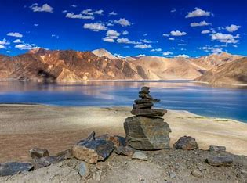
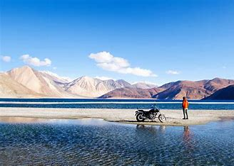
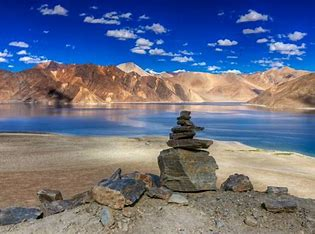
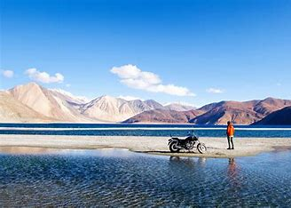
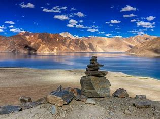
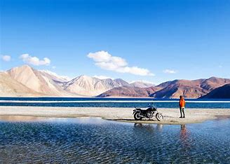

Leh is a city in Indian-administered Ladakh in the disputed Kashmir
region.It is the largest city and the joint capital of Ladakh.Leh, located in the Leh district, was
also the historical capital of the Kingdom of Ladakh. The seat of the kingdom, Leh Palace, the former
residence of the royal family of Ladakh, was built in the same style and about the same time as the Potala
Palace in Tibet.[citation needed] Since they were both constructed in a similar style and at roughly the
same time, the Potala Palace in Tibet and Leh Palace, the royal residence, are frequently contrasted.
It's crucial to keep in mind, though, that Leh Palace lacks the same grandeur[opinion] and historical
significance as the Potala Palace. Although the assertion regarding the architectural period and timeline is
frequently made. Leh is at an altitude of 3,524 m (11,562 ft), and is connected via National Highway 1 to
Srinagar in the southwest and to Manali in the south via the Leh-Manali Highway (part of National Highway
3).Leh was for centuries an important stopover on trade routes along the Indus Valley between Tibet,
Kashmir, India and China. The main goods carried were salt, grain, pashm or cashmere wool, charas or
cannabis resin from the Tarim Basin, indigo, silk yarn and Banaras brocade.
Although there are a few indications that the Chinese knew of a trade route through Ladakh to India as early
as the Kushan period (1st to 3rd centuries CE),and certainly by the Tang dynasty,little is actually
known of the history of the region before the end of the 10th century, when Tibetan prince Skyid lde nyima
gon (or Nyima gon), a grandson of the anti-Buddhist Tibetan king, Langdarma (r. c. 838 to 841), founded the
kingdom. He conquered Western Tibet, although his army originally numbered only 300 men.[citation needed]
Several towns and castles are said to have been founded by Nyima gon, and he apparently ordered the
construction of the primary sculptures at Shey. "In an inscription, he says he had them made for the
religious benefit of the Tsanpo (the dynastical name of his father and ancestors), and of all the people of
Ngaris (Western Tibet). This shows that already in this generation Langdarma's opposition to Buddhism had
disappeared." Shey, 15 km east of modern Leh, was the ancient seat of the Ladakhi kings.
During the reign of Delegs Namgyal (1660–1685),the nawab of Kashmir, then a province in the Mughal
Empire, arranged for the Mongol army to temporarily leave Ladakh, though it returned later. As payment for
assisting Delegs Namgyal in the Tibet-Ladakh-Mughal War of 1679–1684, the nawab made a number of onerous
demands. One of the least was construction of a large Sunni Muslim mosque in Leh, at the upper end of the
bazaar in Leh below Leh Palace. The mosque reflects a mixture of Islamic and Tibetan architecture and can
accommodate more than 500 people. This was apparently not the first mosque in Leh; there are two smaller
ones that are said to be older.
Trade routes have traditionally converged on Leh from all four directions. The modern highway follows the
most direct route from the Punjab via Mandi, the Kulu valley, the Rohtang Pass, and Lahaul to the Indus
Valley, then downriver to Leh. The route from Srinagar was roughly the same as the road that today crosses
the Zoji La (pass) to Kargil, then up the Indus Valley to Leh. From Baltistan there were two difficult
routes: the main one ran up the Shyok Valley from the Indus, over a pass and then down the Hanu River to the
Indus again below Khalsi (Khalatse). The other ran from Skardu straight up the Indus to Kargil and on to
Leh. Both summer and winter routes ran from Leh to Yarkand via the Karakoram Pass and Xaidulla. A couple of
possible routes also ran from Leh to Lhasa.

